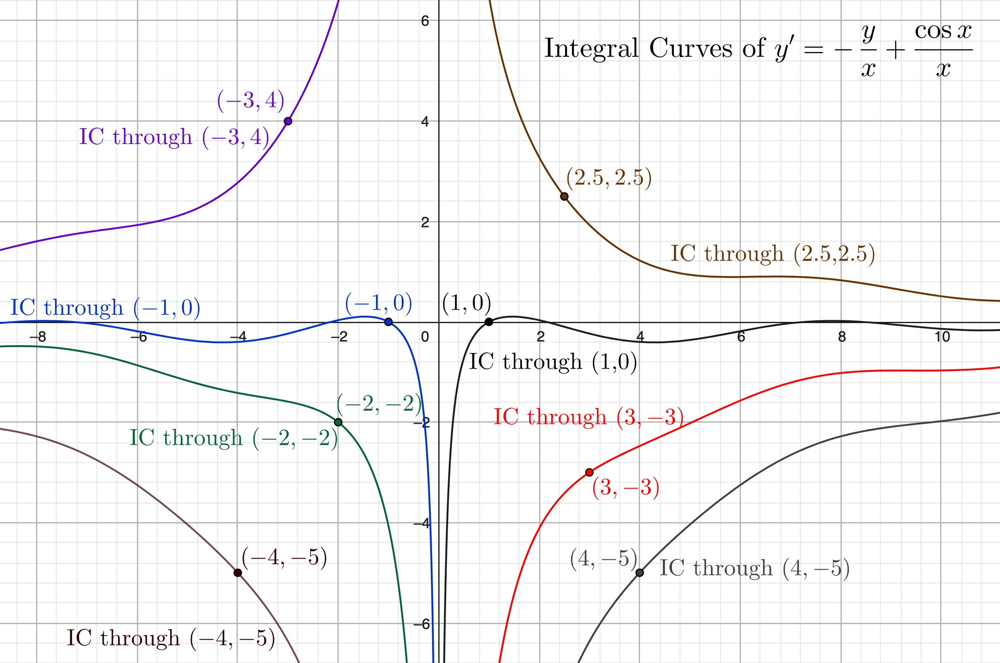

Notes: These solutions are provided "as-is," for informational purposes only, with no warranty of any kind, expressed or implied, including that of correctness, adequacy, and/or suitability for any purpose, whatsoever. Corrections are welcome and should be emailed to selectedsolutionsdotnet@gmail.com.
Purple font indicates clicking on the text will return you to your prior place; \(\blksq\) indicates the end of a proof; unlike the text, but consistent with most mathematical usage after "Algebra 2," we use \(\log\) to denote the "natural" logarithm, \(\log_e\).
| Section 1: Linear Equations | |||||||||
|---|---|---|---|---|---|---|---|---|---|
| Problem #: | 4 | 8 | 12 | 16 | 20 | 21 | 22b | 24 | |
| Section 2: Further Discussion of Linear Equations | |||||||||
| Problem #: | 4 | 7 | 10 | 16 | 20 | 24 | 26 | 27b | 31 |
| Section 3: Separable Equations | |||||||||
| Problem #: | 2 | 6 | 10 | 14 | 18 | 22 | |||
| Section 4: Differences Between Linear and Nonlinear Equations | |||||||||
| Problem #: | 2 | 5 | 8 | 12 | 14 | ||||
First, a bit of problem solving strategy
The objective of the integrating factor method is to find \(f(x)\) that will make the left hand side of \(y’ + p(x)y = g(x)\) an exact differential, i.e., to find \(f(x)\) such that \(f(x)p(x) = f’(x)\) so that \(f(x)y’ + f(x)p(x)y = f(x)y’ + f’(x)y = \left[f(x)y\right]’\). However, sometimes, especially in the problems below, we’re given the DE in the form \(f(x)y’ + q(x)y = h(x)\) and it turns out that \(q(x) = f’(x)\) so that the left hand side starts out as \(f(x)y’ + f’(x)y = \left[f(x)y\right]’\), i.e., an exact differential. In such instances, it is a waste of time to go through the process of finding the integrating factor, because we can immediately write the DE as \(\left[f(x)y\right]’ = h(x)\) and proceed to integrating both sides. Since differentiating is typically easier than integrating, for each problem given in the form \(f(x)y’ + q(x)y = h(x)\), before converting it to \(y’ + p(x)y = g(x)\) and computing the integrating factor, we will first compute the derivative of \(f(x)\) to see if it equals the coefficient of \(y\), i.e., we will first check to see if the left hand side is given to us as an exact differential.
Problems 2.1.4 and 2.1.8: find the general solution of the given differential equation.
2.1.4) \(y’ + (1/x)y = 3\cos 2x,~~~~~x \gt 0\)
Sln: (I prefer to solve these using the method rather than the formula.) This is of the form \(y’ + p(x)y = g(x)\) with \(p(x) = 1/x, g(x) = 3\cos 2x\); thus the integrating factor \(\mu(x) = \exp\left(\Int\Frac1x dx\right) = e^{\log x} = x\). Multiplying through by \(x\) (which we can do without concern since it’s stipulated that \(x \gt 0\)), we get:
\(xy’ + y = \Frac d{dx}(xy)\) \(= 3x\cos 2x \implies xy = \Int3x\cos 2x dx = \Frac34\left(2x\sin 2x + \cos 2x\right) + C \implies\)
\[\box{y = \Frac32\sin 2x + \Frac{3\cos 2x}{4x} + \Frac Cx}\]
Check: \( y’ = \Frac32 (2)\cos 2x + \Frac{4x(-6\sin 2x) - 4(3\cos 2x)}{16x^2} - \Frac C{x^2} = 3\cos 2x - \Frac{3\sin 2x}{2x} - \Frac{3\cos 2x}{4x^2} - \Frac C{x^2}\),
\( (1/x)y = \Frac{3\sin 2x}{2x} + \Frac{3\cos 2x}{4x^2} + \Frac C{x^2}\) so
\( y’ + (1/x)y = 3\cos 2x \cancel{- \Frac{3\sin 2x}{2x} + \Frac{3\sin 2x}{2x}} \cancel{- \Frac{3\cos 2x}{4x^2} + \Frac{3\cos 2x}{4x^2}} \cancel{- \Frac C{x^2} + \Frac C{x^2}}.~~\chec\)
2.1.8) \((1+x^2)y’ + 4xy = (1+x^2)^{-2}\)
Sln: This is in the form \(f(x)y’ + q(x)y = h(x)\) so we begin by checking to see if \(f’(x) = 2x\) equals \(q(x) = 4x\); since it does not we proceed to the integrating factor method.
Noting that \(1+x^2 \ne 0\) for all real \(x\), divide through by it to yield the equivalent DE \(y’ + 4x(1+x^2)^{-1}y = (1+x^2)^{-3} \equiv\) \(y’ + p(x)y = g(x)\) with \(p(x) = 4x(1+x^2)^{-1}, g(x) = (1+x^2)^{-3}\). Thus the integrating factor \(\mu(x) = \exp\left(\Int\Frac{4x}{1+x^2}dx\right) = \exp\left(2\Int\Frac{du}{u}\right) \text{ (letting } u = 1+x^2 \implies du = 2xdx\text{) } = e^{2\log u} = (1+x^2)^2\). Multiplying the \(y’ + p(x)y = g(x)\) form of the equation through by \(\mu(x)\) yields:
\((1+x^2)^2 y’ + 4x(1+x^2)y = \Frac d{dx}\left[(1+x^2)^2 y\right] = \Frac1{1+x^2} \implies (1+x^2)^2y = \int\Frac1{1+x^2}dx = \tan^{-1}x + C \implies\)
\[\box{y = \frac{\tan^{-1}x + C}{(1+x^2)^2}}\]
Check: \( (1+x^2)y’ = (1+x^2)\left[\Frac{(1+x^2)^2(1+x^2)^{-1} - 4x(1+x^2)(\tan^{-1}x + C)}{(1+x^2)^4}\right] = (1+x^2)^{-2}(1 - 4x(\tan^{-1}x + C)\)
\(4xy = 4x(\tan^{-1}x + C)(1+x^2)^{-2}\) so \((1+x^2)y’ + 4xy = (1+x^2)^{-2} \cancel{- 4x(\tan^{-1}x + C)(1+x^2)^{-2} + 4x(\tan^{-1}x + C)(1+x^2)^{-2}}~~\chec\)
Problems 2.1.12 and 2.1.16: find the solution of the given initial value problem (IVP).
2.1.12) \( y’ + \Frac2x y = \Frac{\cos x}{x^2},~~~y(\pi) = 0,~~~x \gt 0\)
Sln: \(p(x) = \Frac2x \implies \mu(x) = \exp\left(\small{\int\frac2x dx}\right) = x^2\); multiplying through, we obtain \(x^2y’ + 2xy = \Frac{d}{dx}\left(x^2y\right) = \cos x \implies x^2y = \sin x + C\); the IC requires \(\pi^2(0) = 0 = \sin\pi + C = C\) so the solution is
\[\box{y = \frac{\sin x}{x^2}}\]
IC check: \(\Frac{\sin\pi}{\pi^2} = 0~~\chec\)
DE check: \(y’ = \Frac{x^2\cos x - 2x\sin x}{x^4} = \Frac{\cos x}{x^2} - \Frac{2\sin x}{x^3}\)
\(\Frac2x y = \Frac{2\sin x}{x^3} \implies y’ + \Frac2x y = \Frac{\cos x}{x^2} \cancel{- \Frac{2\sin x}{x^3} + \Frac{2\sin x}{x^3}}~~\chec\)
2.1.16) \(xy’ + (x+1)y = x,~~~y(\log 2) = 1\)
Sln: First check to see if the equation is already exact: \((x)’ = 1 \ne x + 1\) so it is not.
At \(x = 0\) the DE reduces to \(y(x) \equiv 0\), and there is no differentiable function consistent with this and the specified initial condition, so assume \(x \ne 0\). Then the given DE is equivalent to \(y’ + (1+\Frac1x)y = 1 \equiv y’ + p(x)y = g(x)\) with \(g(x) = 1, p(x) = 1 + \Frac1x \implies \mu(x) = \exp\left[\int\left(1+\frac1x\right)dx\right] = e^{x+\log x} = xe^x\). Multiplying this through the \(y’ + p(x)y = g(x)\) form of the equation yields \(xe^x y’ + (x+1)e^x y = \Frac{d}{dx}(xe^x y) = xe^x \implies\) \(xe^x y = \Int xe^x dx = (x-1)e^x + C\). The IC requires \(\log 2 e^{\log 2}(1) = \cancel{2\log 2} = (\log 2 - 1)e^{\log 2} + C = \cancel{2\log 2} - 2 + C \implies C = 2\) so we have \(xe^x y = (x-1)e^x + 2 \implies\)
\[\box{y = 1 - \frac{1 - 2e^{-x}}x}\]
IC check: \(1 - \Frac{1-2e^{-\log 2}}{\log 2} = 1 - \Frac0{\log 2} = 1~~\chec\)
DE check: \(xy’ = x\left(0 - \Frac{x(2e^{-x}) - (1)(1 - 2e^{-x})}{x^2}\right) = \Frac{1 - 2e^{-x} - 2xe^{-x}}{x}\)
\((x+1)y = x + \cancel{1 - 1} + 2e^{-x} - \Frac{1 - 2e^{-x}}{x} = x - \Frac{1 - 2e^{-x} - 2xe^{-x}}{x} \implies\)
\(xy’ + (x+1)y = \cancel{\Frac{1 - 2e^{-x} - 2xe^{-x}}{x}} + x \cancel{- \Frac{1 - 2e^{-x} - 2xe^{-x}}{x}} = x~~\chec\)
2.1.20) Use technology to graph the direction field of the given differential equation, use the graph to predict the behavior of solutions as \(x \rightarrow \infty\), and check the prediction by evaluating that limit for the exact solution (found in Problem 8).
Sln: See number 40 in my Chapter 1 solutions for guidance regarding how to use GeoGebra to produce the following graph:
Clearly, the graph implies that all solutions "go to" zero as \(x\) goes to both positive and negative infinity; and indeed,
\( \lim_{x\rightarrow\pm\infty} \Frac{\tan^{-1}x + C}{(1+x^2)^2} \rightarrow \Frac{\pm\Frac{\pi}2 + C}{\infty} \rightarrow 0\).
2.1.21) Solve the IVP \(\Frac{dy}{dx} = \Frac1{e^y - x},~~~y(1)=0\); hint: consider \(x\) as a function of \(y\).
Sln: Note that at \((1,0),~\Frac{dy}{dx} = \Frac1{e^0 - 1} = \Frac10\), i.e., the derivative is undefined, so our solution better reflect that! Now, following the hint, begin by rewriting the equation as \(\Frac{dx}{dy} = e^y - x \equiv x’ + p(y)x = g(y)\) with \(g(y) = e^y, p(y) = 1 \implies \mu(y) = \exp\left(\Int dy \right) = e^y\); multiplying through gives \(e^{2y} = e^y x’ + e^y x = \Frac{d}{dy}(e^y x) \implies\) \(e^y x = \Int e^{2y}dy = \Frac12e^{2y} + C\); the IC gives \(e^0(1) = 1 = \Frac12e^{2(0)} + C \implies C = \Frac12\); thus \(e^{y} x = \Frac{e^{2y} + 1}2 \implies x = \Frac{e^y + e^{-y}}2 = \cosh y \implies \)
\[\box{y = \cosh^{-1}x}\]
which does have an undefined slope (vertical tangent) at \((1,0)\) as required. IC check: \(\cosh^{-1}(1) = 0~~\chec\)
DE check: \(\Frac{d}{dy}\cosh y = \sinh y = \Frac12(e^y - e^{-y}) = \Frac12(2e^y - (e^y + e^{-y}) = e^y - \cosh y = e^y - x \implies \Frac{dy}{dx} = \Frac1{e^y - x}~~\chec\)
2.1.22b) Show that \(\phi(x) = c/x\) is a solution of \(y’ + y^2 = 0~(x \gt 0)\) if and only if \(c=0\) or \(c=1\).
Pf: \(\phi’(x) = -c/x^2 \implies \phi’ + \phi^2 = -\Frac{c}{x^2} + \Frac{c^2}{x^2}\); setting this equal to zero and utilizing the given that \(x \gt 0\) to multiply through by \(x^2 \implies c(c-1) = 0 \implies c = 0\) or \(c=1\) as the only values of \(c\) which make the equation a true statement.\(~~\blksq\)
2.1.24) Given \(y_1(x)\) is a solution of \(y’ + p(x)y = 0\) and \(y_2(x)\) is a solution of \(y’ + p(x)y = g(x)\), show that \(y_1 + y_2\) is also a solution of \(y’ + p(x)y = g(x)\).
Pf: \((y_1 + y_2)’ + p(x)(y_1 + y_2) = (y_1’ + p(x)y_1) + (y_2’ + p(x)y_2) = 0 + g(x)\) (because it is given that \(y_1’ + p(x)y_1 = 0\) and \(y_2’ + p(x)y_2 = g(x)\)) \( = g(x)\), i.e., \(y_1 + y_2\) is a solution of \(y’ + p(x)y = g(x).~~\blksq\)
2.2.4) Find the general solution of \(xy’ + 2y = e^x,~~~x \gt 0\).
Sln: \(x’ = 1 \ne 2\) so the equation is not exact.
\(\mu(x) = \exp\left(\Int \Frac2x dx\right) = x^2 \implies x^2y’ + 2xy = (x^2y)’ = xe^x \implies x^2y = (x-1)e^x + C \implies\) \[\box{y = \frac{e^x}x - \frac{e^x}{x^2} + \frac C{x^2}}\].
Check: \(xy’ = x\left(\Frac{xe^x-e^x}{x^2} - \Frac{x^2e^x-2xe^x}{x^4} - \Frac{2C}{x^3}\right) = e^x - 2\Frac{e^x}x + 2\Frac{e^x}{x^2} - 2\Frac C{x^2}\);
\(2y = 2\Frac{e^x}x - 2\Frac{e^x}{x^2} + 2\Frac C{x^2}\) so
\(xy’ + 2y = e^x \cancel{- 2\Frac{e^x}x + 2\Frac{e^x}x} \cancel{+ 2\Frac{e^x}{x^2} - 2\Frac{e^x}{x^2}} \cancel{- 2\Frac C{x^2} + 2\Frac C{x^2}}~~\chec\).
Problems 2.2.7 and 2.2.10: Solve the given IVP and state the interval in which the solution is valid.
2.2.7) \(y’ + (\cot x)y = 2\csc x,~~~y(\pi/2) = 1\)
Sln: Both cot and csc are discontinuous at integer multiples of \(\pi\), and the interval bounded by such containing \(x=\Frac{\pi}2\) is \(\box{(0,\pi)}\), so that is the interval in which the solution is valid. To obtain the solution: \(\mu(x) = \exp\left(\Int\cot xdx\right) = \exp(\log|\sin x|) = \sin x\) (\(|\sin x| = \sin x\) on the interval of validity) \(\implies (\sin x)y’ + (\cos x)y = \left[(\sin x)y\right]’ = 2 \implies (\sin x)y = 2x + C\); \(y(\pi/2) = 1 \implies \sin\left(\Frac{\pi}2\right)(1) = 1 = 2\left(\Frac{\pi}2\right) + C \implies C = 1-\pi \implies \)
\[\box{y = (2x + 1 - \pi)\csc x}\]
Check: IC: \((2(\pi/2) + 1 - \pi)\csc(\pi/2) = 1~\chec\)
DE: \(y’ = 2\csc x - (2x + 1 - \pi)\csc x\cot x,~(\cot x)y = (2x + 1 - \pi)\csc x \cot x\) so
\(y’ + (\cot x)y = 2\csc x\cancel{ - (2x + 1 - \pi)\csc x\cot x + (2x + 1 - \pi)\csc x \cot x}~\chec\)
2.2.10) \(x(2+x)y’ + 2(1+x)y = 1+3x^2,~~~y(-1) = 1\)
Sln: \(\left[x(2+x)\right]’ = (1)(2+x) + (x)(1) = 2 + 2x = 2(1+x)\) so the equation is exact as given:
\(x(2+x)y’ + 2(1+x)y = \left[x(2+x)y\right]’ = 1 + 3x^2\) so \(x(2+x)y = \Int\!\left(1+3x^2\right)dx = x^3 + x + C\). Using the IC we obtain \((-1)(2-1)(1) = -1 = (-1)^3 - 1 + C \implies C = 1 \implies\)
\[\box{y = \frac{x^3 + x + 1}{x(x+2)} = x - 2 + \frac{5x + 1}{x^2+2x}}\]
Check: IC: \(\Frac{(-1)^3 + (-1) + 1}{(-1)(-1+2)} = (-1)/(-1) = 1~\chec\)
DE: \(x(2+x)y’ = x(2+x)\left[1 + \Frac{(x^2+2x)(5) - (5x+1)(2x+2)}{(x^2+2x)^2}\right] = \Frac{(x^2+2x)^2 - 5x^2 - 2x - 2}{x^2+2x} = \Frac{x^4 + 4x^3 - x^2 - 2x - 2}{x^2+2x}\),
\(2(1+x)y = 2(1+x)\left(\Frac{x^3 + x + 1}{x(x+2)}\right) = \Frac{2x^4 + 2x^3 + 2x^2 + 4x + 2 }{x^2+2x}\) so
\(x(2+x)y’ + 2(1+x)y = \Frac{3x^4 + 6x^3 + x^2 + 2x}{x(x+2)} \underset{x\ne 0}{=} \Frac{3x^3 + 6x^2 + x + 2}{x+2} = \Frac{3x^2(x+2) + 1(x+2)}{x+2} \underset{x\ne -2}{=} 3x^2 + 1~\chec\).
The certain domain of validity is the maximal portion of the intersection of the domains of \(p(x) = \Frac{2(1+x)}{x(2+x)}\) and \(g(x) = \Frac{1+3x^2}{x(2+x)}\) that contains the initial abscissa, \(x= -1\); both \(p\) and \(g\) have the same domain, \(\mathbb{R}\backslash\{-2,0\}\), which is thus their intersection, and the maximal portion of this containing \(x=-1\) is the open interval \(\box{(-2,0)}\).
2.2.16)
Given \(y’ + (1/x)y = (\cos x)/x\):
a) Solve for \(x \gt 0\).
Sln: In instances like this, it is worth checking to see if simply "clearing the denominators" results in the left hand side being exact: for \(x \gt 0, y’ + (1/x)y = (\cos x)/x \equiv xy’ + y = (xy)’ = \cos x \implies xy = \Int\!\cos x\:dx = \sin x + C \implies\)
\[\box{y = \frac{\sin x}x + \frac Cx}\]
Check: \(y’ + (1/x)y = \Frac{\cancel{x}\cos x - \cancel{\sin x}}{x^{\cancel{2}}} - \cancel{\Frac C{x^2}} + \cancel{\Frac{\sin x}{x^2}} + \cancel{\Frac C{x^2}} = \Frac{\cos x}x~~\chec\)
b) Determine \(\Lim_{x\rightarrow 0} y(x)\) for various values of the integration constant.
Sln: \(\Lim_{~~x \rightarrow 0^+} \left[\Frac{\sin x}x + \Frac Cx\right] = \)
\(\Lim_{~~x \rightarrow 0^+} \Frac{\sin x}x + \Lim_{~~x \rightarrow 0^+} \Frac Cx = 1 + \left\{
\begin{array}{cc}
0, & C = 0 \\
\infty, & C \gt 0 \\
-\infty, & C \lt 0
\end{array}
\right.\)
(The reader should know, or at least know how to compute, the required limits from elementary Calculus.)
c) Graph several members of the family of integral curves (i.e., solutions through specific "initial" conditions).
Sln: Using GeoGebra Graphing mode:
Step 1: define (enter) y’ = -y/x + (cos x)/x; if necessary, "undisplay" the result (by clicking on the circle to the left of the definition).
Step 2: define S = SlopeField(y’) (number of grid points—the optional second parameter—is unnecessary because we’re not going to display S); undisplay the result.
Step 3: define a point, P_ab = (<a>,<b>), through which you want to see the integral curve (<> around something means you supply an actual value).
Step 4: define its integral curve IC_ab = Locus(S, P_ab).
Step 5: Repeat Steps 3 and 4 as much as you like!
Here’s the result for IC’s (solutions) through \((2.5,2.5), (1,0), (3,-3), (4,-5), (-4,-5), (-2,-2), (-1,0), \&~(-3,4)\):

2.2.20) Given the IVP \((\log x)y’ + y = \cot x,~~y(2) = 3\), without solving it, in what interval is its solution certain to exist?
Sln: The interval in which the solution is certain to exist is the maximal portion of the intersection of the domains of \(p(x)\) and \(g(x)\) containing the initial condition-specified value of \(x = 2\), where \(p\) and \(g\) are defined by the DE in the form \(y’ + p(x)y = g(x)\); thus, here, \(p(x) = 1/\log x\), the domain of which is \((0,1) \cup (1,\infty)\) and \(g(x) = 1/\left[(\log x)(\sin x)\right]\), the domain of which is \((0,1) \cup \mathbb{R}^+\backslash \{(2k-1)\pi, k \in \mathbb{Z}^+\}\), i.e., the positive real numbers except \(1\) and the positive odd multiples of \(\pi\); the maximal portion of the intersection of these two sets containing \(2\) is the open interval \(\box{(1,\pi)}\), which is thus the required interval.
2.2.24)
a) Show that the solution \(\Frac{\int\mu(x)g(x)dx + c}{\mu(x)}\) of \(y’ + p(x)y = g(x)\) where \(\mu(x) = \exp\left(\Int p(x)dx\right)\) can be written as \(y = cy_1(x) + y_2(x)\) for suitably chosen \(y_1\) and \(y_2\) and identify the functions \(y_1\) and \(y_2\).
Sln: "Trivial": \(\Frac{\int\mu(x)g(x)dx + c}{\mu(x)} = \Frac{\int\mu(x)g(x)dx}{\mu(x)} + \Frac c{\mu(x)} = cy_1(x) + y_2(x)\) with \(\box{y_1 = \frac1{\mu(x)}}\) and \(y_2 = \box{\frac{\int\mu(x)g(x)dx}{\mu(x)}}~~\blksq\).
b) Show that \(y_1\) is a solution of \(y’ + p(x)y = 0\).
Sln: \(y_1’ = \left[\exp\left(-\Int p(x)dx\right)\right]’ = -p(x)\exp\left(-\Int p(x)dx\right)\) and \(p(x)y_1 = p(x)/\mu(x) = p(x)\exp\left(-\Int p(x)dx\right)\) so \(y_1’ + p(x)y_1 \equiv 0.~~\blksq\)
c) Show that \(y_2\) is a solution of the full DE, \(y’ + p(x)y = g(x)\).
Sln: Let \(\nu(x) = \Int\mu(x)g(x)dx \implies \nu’(x) = \mu(x)g(x)\); then \(y_2’ = \Frac{\mu \nu’ - \mu’ \nu}{\mu^2} = \Frac{\cancel{\mu^2} g}{\cancel{\mu^2}} - \Frac{p\mu\nu}{\mu^2}\) and \(py_2 = \Frac{p\nu}{\mu} = \Frac{p\mu\nu}{\mu^2}\) so \(y_2’ + py_2 = g \cancel{- \Frac{p\mu\nu}{\mu^2} + \Frac{p\mu\nu}{\mu^2}}~~\blksq\)
2.2.26)
Sove the IVPs
a) \[\begin{eqnarray}
y’ + 2y & = & g(x) \\
y(0) & = & 0 \\
g(x) & = & \left\{\begin{array}{1 1}
1, & 0 \le x \le 1 \\
0, & x \gt 1
\end{array}\right.
\end{eqnarray}
\]
Sln: The solution is is going to be a piece‑wise continuous function \(y = \left\{ \begin{array}{ll} y_{\lt}(x), & x \in [0,1] \\ y_{\gt}(x), & x \in (1,\infty) \end{array} \right.\); since the initial condition \(x=0\) is in the interval \([0,1]\), it will determine the integration constant for \(y_{\lt}\); the integration constant for \(y_{\gt}\) will be determined so as to make the function continuous at \(x=1\). Since we’re able to fully determine \(y_{\lt}\) with the given information, we solve for that first; however, note that \(\mu(x) = \exp\left(\Int 2dx\right) = e^{2x}\) is the same for both equations: all that differs is the right hand side.
On \([0,1]\) we have \(e^{2x}y_{\lt}’ + 2e^{2x}y_{\lt} = \left(e^{2x}y_{\lt}\right)’ = e^{2x} \implies e^{2x}y_{\lt} = \Frac12 e^{2x} + C_{\lt}\); \(y(0) = 0 \implies \left(e^{2(0)}\right)(0) = 0 = \Frac12 e^{2(0)} + C_{\lt} \implies C_{\lt} = -\Frac12\) so \(\box{y_{\lt} = \frac12\left(1 - e^{-2x}\right)}\). Check: IC: \(\Frac12\left(1-e^{-2(0)}\right) = 0~\chec\); DE: \(y_{\lt}’ + 2y_{\lt} = (-2)\Frac{-e^{-2x}}2 + 2\left(\Frac12\right )\left(1-e^{-2x}\right) = 1.~\chec\)
On \((1, \infty)\) we have \(\left(e^{2x}y_{\gt}\right)’ = 0 \implies e^{2x}y_{\gt} = C_{\gt} \implies y_{\gt} = C_{\gt}e^{-2x}\); we choose \(C_{\gt}\) by "pretending" that \(y_{\gt}\) is defined at \(x=1\) and equating it there to \(y_{\lt}\): \(y_{\gt}(1) = y_{\lt}(1) \implies C_{\gt}\left(e^{-2}\right) = \Frac12\left(1 - e^{-2}\right) \implies C_{\gt} = \Frac12\left(e^2-1\right) \implies \box{y_{\gt} = \frac12\left(e^2-1\right)e^{-2x}}\). Check: "boundary" condition: \(y_{\gt}(1) = \Frac12\left(e^2-1\right)e^{-2(1)} = \Frac12(1-e^{-2})~\chec\); DE: \(y’ + 2y = (-2)\Frac12\left(e^2-1\right)e^{-2x} + (2)\Frac12\left(e^2-1\right)e^{-2x} = 0~\chec\). All together, we have:
\[\box{y(x) = \left\{
\begin{array}{ll}
\left(1 - e^{-2x}\right)/2, & x \in [0,1] \\
\left(e^{2}-1\right)/\left(2e^{2x}\right), & x \in (1,\infty)
\end{array}
\right.}
\]
b) \[\begin{eqnarray} y’ + p(x)y & = & 0 \\ y(0) & = & 1 \\ p(x) & = & \left\{\begin{array}{1 1} 2, & 0 \le x \le 1 \\ 1, & x \gt 1 \end{array}\right. \end{eqnarray} \]
Sln: The approach is the same—we first solve completely over the domain which contains the initial condition, then we solve over the rest of the domain, choosing the integration constant for that solution so that the function is continuous at \(x=1\)—but in this instance each subdomain requires a different integrating factor.
On \([0,1]\): \(\mu_{\lt}(x) = \exp\left(\Int 2dx\right) = e^{2x} \implies \left(e^{2x}y_{\lt}\right)’ = 0 \implies y_{\lt} = C_{\lt}e^{-2x}\) and the IC requires that \(1 = C_{\lt}e^{-2(0)} \implies C_{\lt} = 1 \implies \box{y_{\lt} = e^{-2x}}\). Check: IC: \(e^{-2(0)} = 1~\chec\); DE: \(y_{\lt}’ + 2y_{\lt} = -2e^{-2x} + 2e^{-2x} = 0~\chec\).
On \((1,\infty)\): \(\mu_{\gt}(x) = \exp\left(\Int 1dx\right) = e^x \implies \left(e^x y_{\gt}\right)’ = 0 \implies y_{\gt} = C_{\gt}e^{-x}\); continuity at \(x=1\) requires that \(C_{\gt}e^{-1} = e^{-2(1)} \implies C_{\gt} = e^{-1} \implies \box{y_{\gt} = e^{-x-1}}\). Check: continuity condition: \(e^{-1-1} = e^{-2(1)}~\chec\); DE: \(y_{\gt}’ + y_{\gt} = -e^{-x-1} + e^{-x-1} = 0.~\chec\) All together we have:
\[\box{y(x) = \left\{
\begin{array}{ll}
e^{-2x}, & x \in [0,1] \\
e^{-x-1}, & x \in (1,\infty)
\end{array}
\right.}
\]
2.2.27b) Show that for \(n \ne 0, 1\), the substitution \(\u = y^{1-n}\) reduces \(y’ + p(x)y = q(x)y^n\) to a linear equation.
Pf: For \(n \ne 0, 1\), \(\u = y^{1-n} \implies \u’ = (1-n)y^{-n}y’\); since our objective is to show that the substitution puts the equation into the form \(\u’ + P(x)\u = Q(x)\) for some \(P\) and \(Q\), we try multiplying the given equation through by \((1-n)y^{-n}\): \((1-n)y^{-n}q(x)y^n = (1-n)q(x) = Q(x) = (1-n)y^{-n}y’ + (1-n)p(x)y^{-n}y = (y^{1-n})’ + (1-n)p(x)y^{1-n} = \u’ + P(x)\u\) with \(P(x) = (1-n)p(x)\) and \(\u = y^{1-n}.~~\blksq\)
2.2.31) Solve \(dy/dt = (\Gamma\cos t + T)y - y^3\), where \(\Gamma\) and \(T\) are constants.
Sln: Rewriting the equation as \(y’ - (\G\cos t + T)y = -y^3\) makes it clear that it is Bernoulli with \(n=3, p(t) = -(\G\cos t + T), q(t) = -1\); thus, referencing the result of Problem 2.27b, letting \(\u = y^{1-3} = y^{-2}\) transforms it into \(\u’ + P(t)\u = Q(t)\) where \(P(t) = (1-3)p(t) = 2(\G\cos t + T)\) and \(Q(t) = -(1-3) = 2\). This has integrating factor \(\mu(t) = \exp\left[2\Int(\G\cos t + T)dt \right] = \exp(2\G\sin t + 2Tt)\); multiplying it through the transformed equation yields \(\exp(2\G\sin t + 2Tt)\u’ + \exp(2\G\sin t + 2Tt)(2\G\cos t + 2T)\u = \left[\exp(2\G\sin t + 2Tt)\u\right]’ = 2\exp(2\G\sin t + 2Tt) \implies\) \(\exp(2\G\sin t + 2Tt)\u = 2\DefInt{t_0}{t}\exp(2\G\sin s + 2Ts)ds \implies y^{-2} = 2[\mu(t)]^{-1}\left[\DefInt{t_0}{t}\mu(s)ds\right] \implies\)
\[\box{y = \pm\sqrt{\mu(t)\left(2\small{\int}_{t_0}^{t}\normalsize\mu(s)ds\right)^{-1}}}\]
\(\mu(x)\) defined as above (the "\(+~c\)" included in the answer in the back of my copy of the text is redundant: either \(\DefInt{t_0}{t}\mu(s)ds\) or \(\Int\mu(s)ds + c\) suffices). Check: \(dy/dt = \Frac1{2y}\left[\Frac{\mu’(t)\left(2\DefInt{t_0}{t}\mu(s)ds\right) - 2(\mu(t))^2}{\left(2\DefInt{t_0}{t}\mu(s)ds\right)^2}\right] = \Frac1{2y}\left[\Frac{2(\G\cos t + T)\mu(t)}{2\DefInt{t_0}{t}\mu(s)ds} - 2y^4\right] = (\G\cos t + T)y^2/y - y^3~\chec\).
Problems 2.3.2 and 2.3.6: Solve the given DE.
2.3.2) \(y’ = \Frac{x^2}{y(1+x^3)}\)
Sln: First note that \(y’\) is undefined for \(x=-1\) and \(y=0\). Now, I prefer the formalism of manipulating the equation to look like \(M(x)dx + N(y)dy = 0 \implies \Int M(x)dx + \Int N(y)dy = C\); this alternate formalism is implied in the text, and the reader should recognize that it’s "six one way, half‑a‑dozen the other." Thus, with the value exclusions noted above, this DE is equivalent to \(\Frac{x^2}{1+x^3}dx - ydy = 0 \implies \Int \frac{x^2}{1+x^3}dx - \Int ydy = c\), which, letting \(u = 1+x^3\), is equivalent to \(\Frac13\Int \Frac{du}u - \Frac12y^2 = \Frac13\log|1+x^3| - \Frac12 y^2 = c\), which, after multiplying through by \(6\) and bringing the resulting coefficient of \(2\) inside the logarithm to remove the absolute value, gives:
\[\box{\log\left[(1+x^3)^2\right] - 3y^2 = C,~y \ne 0}\]
(Note that the solution in this form implicitly excludes \(x = -1\) but that we must explicitly exclude \(y = 0\).)
Check: \(d(C = \log\left[(1+x^3)^2\right] - 3y^2) \implies 0 = \Frac{6x^2(1+x^3)}{(1+x^3)^2}dx - 6ydy \implies \Frac{dy}{dx} = \Frac{x^2}{y(1+x^3)}\) assuming \(x \ne -1\) and \(y \ne 0~~\chec.\)
2.3.6) \(xy’ = (1 - y^2)^{1/2}\)
Sln: First note that, limiting consideration to solutions over \(\mathbb{R}\), we immediately have the condition that \(|y| \le 1\). Now, \(y = \pm 1 \implies x = 0\) or \(y’ = 0 \implies y = C = \pm1\) (regardless of the value of \(x\)), so the constant functions \(\box{y = 1\text{ and } y = -1}\) are two solutions (the rudimentary check is left to the reader).
Next, excluding \(x = 0\) and \(y = \pm1\), the DE is equivalent to \(\Frac{dy}{\sqrt{1-y^2}} - \Frac{dx}x = 0 \implies \sin^{-1}y - \log|x| = C \implies\)
\[\box{y = \sin(\log|x| + C), x \ne 0, |y| \lt 1}\]
Check: \(y’ = \cos(\log|x| + C)\Frac d{dx}\left(\log\sqrt{x^2}\right) = \sqrt{1-y^2}(1/\cancel{2})(\cancel{2}\cancel{x})/(x^{\cancel{2}1}) \implies xy’ = \sqrt{1-y^2}~~\chec\).
Problems 2.3.10 and 2.3.14: Solve the given IVP in explicit form and determine (at least approximately) the interval in which it is well‑defined.
2.3.10) \(dr/d\t = r^2/\t,~~r(1) = 2\)
Sln: We begin by noting that \(\t\) can’t equal \(0\), and, excluding that, if \(r = 0, dr/d\t = 0\), so when we get the solution, we’ll have to check it for consistency with that. For \(r, \t \ne 0, dr/d\t = r^2/\t \implies r^{-2}dr - d\t/\t = 0 \implies -\Frac1r - \log|\t| = C\); the initial condition (IC) gives \(-\Frac12 - \log(1) = -\Frac12 = C \implies\) \(\Frac1r + \Frac12\log(\t^2) = \Frac12 \implies \Frac1r = \Frac{1-\log(\t^2)}2 \implies r = \Frac2{1-\log(\t^2)}\), which, in addition to the already stipulated \(\t \ne 0\), also requires that \(\log(\t^2) \ne 1 \implies \t \ne \pm\sqrt{e}\). Thus the possible intervals of guaranteed existence of the solution are \((-\infty, -\sqrt e), (-\sqrt e, 0), (0, \sqrt e), (\sqrt e, \infty)\) and the actual interval is the one containing the initial abscissa of \(\t = 1\), which is \((0, \sqrt e)\). Thus the certain solution is
\[\box{r(\t) = \frac2{1-\log(\t^2)}, \t \in (0, \sqrt e)}\]
Check: IC: \(r(1) = \Frac2{1-\log(1^2)} = \Frac21~\chec\); as noted, \(r\) is never \(0\), so we don’t need to worry about \(r = 0 \implies dr/d\t = 0~\chec\); DE: \(\Frac{dr}{d\t} = \left(\Frac{\cancel{-}2}{(1-\log(\t^2))^2}\right)\left(\cancel{-}\Frac{2\cancel{\t}}{\t^{\cancel{2}1}}\right) = r^2/\t~~\chec\).
2.3.14) \(y’ = x(x^2 + 1)/(4y^3),~~y(0) = -1/\sqrt2\)
Sln: We begin by noting that \(y\) can’t equal \(0\). Otherwise, the DE is equivalent to \((x^3 + x)dx - 4y^3dy = 0 \implies x^4/4 + x^2/2 - y^4 = C\); the initial condition requires \(0^4/4 + 0^2/2 - (-1/\sqrt2)^4 = -1/4 = C \implies y^4 = x^4/4 + x^2/2 + 1/4\) which implies, formally, \(y = \pm\sqrt[4]{x^4/4 + x^2/2 + 1/4}\); however, the initial condition requires that we choose the negative sign; since every term under the radical is strictly \(\ge 0\), \(y\) is well‑defined for all real \(x\); moreover, since \(x^4/4 + x^2/2 + 1/4 \ge 1/4\) (why? proof?), \(y \ne 0\) for all real \(x\); therefore, the solution is:
\[\box{y = -\sqrt[4]{x^4/4 + x^2/2 + 1/4}, x \in \mathbb{R}}\]
Check: IC: \(-\sqrt[4]{0^4/4 + 0^2/2 + 1/4} = -\sqrt[4]{1/4} = -1/\sqrt2~\chec\); DE: \(y’ = -\Frac14(x^4/4 + x^2/2 + 1/4)^{-3/4}(x^3 + x) = x(x^2 + 1)/(4y^3)~\chec\).
2.3.18) Solve the IVP \(y’ = 3x^2/(3y^2 - 4),~~y(1) = 0\) and determine the interval in which the solution is valid.
Sln: Begin by noting that \(y’\) is undefined at \(y = \pm2/\sqrt3\): the \(x\) value(s) for which \(y(x)\) equals those values, if there are such \(x\), will delimit the interval of validity. Now, excluding those values of \(y\), the DE is equivalent to \(3x^2dx - (3y^2 - 4)dy = 0 \implies x^3 - y^3 + 4y = C\); the IC gives \(1^3 - 0^3 + 4(0) = 1 = C\), which implies the formal solution, expressed implicitly (we are not asked to express the solution explicitly), is
\[\box{x^3 - y^3 + 4y = 1}.\]
The bounds on the interval of validity are obtained from \(x^3 = (\pm2/\sqrt3)^3 - 4(\pm2/\sqrt3) + 1 = \pm8/(3\sqrt3) \mp 24/(3\sqrt3) + 1 = 1 \mp16/(3\sqrt3) \implies x = \sqrt[3]{1 \mp 16/(3\sqrt3)}\) and the initial \(x=1\) lies between these bounds so the domain of validity is the open interval \(\box{\left(\sqrt[3]{1 - 16/(3\sqrt3)}, \sqrt[3]{1 + 16/(3\sqrt3)}\right)}.\)
Check: IC: \(1^3 - 0^3 + 4(0) = 1~\chec\); DE: \(d(x^3 - y^3 + 4y = 1) \implies 3x^2dx - (3y^2 - 4)dy = 0 \implies dy/dx = 3x^2/(3y^2 - 4)~\chec\).
2.3.22) Show that the equation \[\frac{dy}{dx} = \frac{y-4x}{x-y}\] is not separable "as is," but that changing \(y\) to \(\u = y/x\) renders the equation separable in \(x\) and \(\u\) and thence find the solution of the given equation.
Sln: Without a change of variables, the DE is equivalent to \((y-4x)dx - (x-y)dy = 0\) and it’s certainly not clear how one might manipulate this to look like \(M(x)dx + N(y)dy = 0\); but as to proving that doing so is impossible, I don’t know how to do that. However, as suggested, letting \(\u = y/x~(\implies x \ne 0) \implies y = x\u \implies \Frac{dy}{dx} = \u + x\Frac{d\u}{dx} = \Frac{y-4x}{x-y} = \Frac{\u-4}{1-\u} \implies\)
\(\Frac{x}{dx} = \Frac1{d\u}\left(\Frac{\u-4}{1-\u} - \u\right) = \Frac1{d\u}\left(\Frac{\u^2-4}{1-\u}\right) \implies 0 = \Frac{dx}x + \Frac{\u-1}{(\u+2)(\u-2)}d\u = \) (using partial fractions) \(\Frac{dx}x +\Frac3{4(\u+2)}d\u + \Frac1{4(\u-2)}d\u \implies 4\log|x| + 3\log|\u + 2| + \log|\u-2| = c \implies \cancel{x^4}\Frac{|y+2x|^3}{\cancel{|x|^3}}\Frac{|y-2x|}{\cancel{|x|}} = C \implies\)
\[\box{|y-2x||y+2x|^3 = C}\]
Check: the tedious‑but‑straighforward check is left to the reader (hints: \(|x| = \sqrt{x^2}\), and remember that after differentiating the right hand side of the solution, it’s \(0\), so a lot of "complications" can be eliminated by multiplying and dividing through by factors that arise in differentiating the left hand side—have fun!)
"Extra Credit": Explain the significance of the four lines: \(y = x\); \(y = 4x\); \(y = 2x\); and \(y = -2x\).
Problems 2.4.2, 2.4.5, and 2.4.8: State the region in the \(xy\) plane in which the hypotheses of text Theorem 2.4.1 are satisfied.
2.4.2) \(y’ = (1 - x^2 - y^2)^{1/2}\)
Sln: \(y’ = f(x,y) = (1 - x^2 - y^2)^{1/2}\) is continuous for \(1 - x^2 - y^2 \ge 0 \implies x^2 + y^2 \le 1\); \(\partial_y f = \Frac12(1 - x^2 - y^2)^{-1/2}(-2y) = -\Frac y{\sqrt{1 - x^2 - y^2}}\) is continuous for \(1 - x^2 - y^2 \gt 0 \implies x^2 + y^2 \lt 1\); the latter of these is the intersection of the two regions, thus the required region is
\[\box{\{(x,y) : x^2 + y^2 \lt 1\}}\]
i.e., the origin‑centered open unit disc.
2.4.5) \(y’ = \Frac{\log|xy|}{1 - x^2 + y^2}\)
Sln: \(y’ = f(x,y) = \Frac{\log|xy|}{1 - x^2 + y^2}\) is continuous everywhere except on the lines \(x=0\), \(y=0\), and the hyperbola \(x^2 - y^2 = 1\); to compute \(\partial_y f\), we write it as \(\Frac12\left[\Frac{\log(x^2)}{1 - x^2 + y^2} + \Frac{\log(y^2)}{1 - x^2 + y^2}\right] \implies \partial_y f = \Frac1{\cancel{2}}\left[\Frac{-\cancel{2}y\log(x^2) + \cancel{2}\cancel{y}(1 - x^2 + y^2)/y^{\cancel{2}1} - \cancel{2}y\log(y^2)}{(1 - x^2 + y^2)^2}\right] =\) \(\Frac1{y(1 - x^2 + y^2)} - \Frac{y\log(x^2y^2)}{(1 - x^2 + y^2)^2}\) which is discontinuous precisely where \(f\) is, so the required region is
\[\box{\{(x,y): x, y \in \mathbb{R}, x \ne 0, y \ne 0, x^2 - y^2 \ne 1\}}.\]
2.4.8) \(\Frac{dy}{dx} = \Frac{(\cot x)y}{1 + y}\)
Sln: \(f(x,y) = \Frac{(\cot x)y}{1 + y}\) is discontinuous on the line \(y = -1\) and the lines \(x = k\pi, k \in \mathbb{Z}\); \(\partial_y f = \cot x\Frac{(1+y) - y}{(1+y)^2} = \Frac{\cot x}{(1+y)^2}\) which is discontinuous precisely where \(f\) is, so the required region is
\[\box{\{(x,y): x,y \in \mathbb{R}, y \ne -1, x \ne k\pi, k \in \mathbb{Z}\}}\]
2.4.12) Solve the IVP \(y’ = x^2/\left[y(1+x^3)\right],~~y(0) = y_0\) and determine how the interval in which the solution exists depends on \(y_0\).
Sln: First note that \(y’\) is undefined for \(x = -1\) and \(y=0\). These values excluded, the DE is equivalent to \(0 = \Frac{x^2}{1+x^3}dx - ydy = \) (with \(u = 1+x^3 \implies du = 3x^2dx\)) \(\Frac{du}{3u} - \Frac12d(y^2) \implies \Frac13\log|1+x^3| - \Frac12y^2 = c \implies \Frac13\log\left[(1+x^3)^2\right] - y^2 = C\). The IC \(y(0) = y_0 \implies C = -y_0^2\) yielding the solution:
\[\box{y^2 - y_0^2 = \frac13\log\left[(1+x^3)^2\right]}\]
Check: IC: \(y_0^2 - y_0^2 = 0 = \Frac13\log\left[(1+0^2)^2\right]~\chec\); DE: \(d\left(y^2 - y_0^2 = \Frac13\log\left[(1+x^3)^2\right]\right) \implies \) \(\cancel{2}ydy = \Frac{\cancel{2}\cancel{(1+x^3)}(\cancel{3}x^2)}{\cancel{3}(1+x^3)^{\cancel{2}1}} \implies\) \(\Frac{dy}{dx} = \Frac{x^2}{y(1+x^3)}~\chec\).
To determine how the interval in which the solution exists depends on \(y_0\), begin by rewriting the solution as \(y^2 = y_0^2 + \Frac13\log\left[(1+x^3)^2\right] \implies y_0^2 + \Frac13\log\left[(1+x^3)^2\right] \gt 0\) (\(\gt\) instead of \(\ge\) because \(y=0\) is excluded from the solution due to the original form of the DE). To determine the bounds of this set we solve \(y_0^2 + \Frac13\log\left[(1+x^3)^2\right] = 0 \implies \exp(-3y_0^2) = (1+x^3)^2 \implies\) \(\pm\exp(-3y_0^2/2) = 1+x^3 \implies x = \left[-1 \pm\exp(-3y_0^2/2)\right]^{1/3}\), which implies that the well‑defined set would be \(\left(-\infty, \left[-1 - \exp(-3y_0^2/2)\right]^{1/3}\right) \cup \left(\left[-1 + \exp(-3y_0^2/2)\right]^{1/3}, \infty\right)\) (it must be the set which excludes \(x=-1\) because \(x=-1\) is excluded by the original form of the DE), except that \(y_0\) is stipulated to correspond to \(x=0\), which is in the right portion of the union, so the interval in which the solution exists for such \(y_0\) is \[\box{\left(\left[-1 + \exp(-3y_0^2/2)\right]^{1/3}, \infty\right)}\]
a) Verify that \(y_1(x) = 1 - x\) and \(y_2(x) = -x^2/4\) are both solutions of the IVP \[y’ = \frac{-x + (x^2 + 4y)^{1/2}}2,~~~y(2) = -1\] and indicate their domains of validity.
Sln: Verification that the IC is satisfied for both functions is trivial and left to the reader. For the DEs: \(y_1’ = -1\) while \(\Frac{-x + (x^2 + 4(1-x))^{1/2}}{2} = \Frac{-x + (x^2 - 4x + 4)^{1/2}}2 = \Frac{-x + |x-2|}2\) and for this to \( = -1\) identicallly, \(x - 2 \ge 0 \implies \box{x \ge 2}\) as the domain of validity for \(y_1\). For \(y_2, y_2’ = -x/2\) while \(\Frac{-x + (x^2 + 4(-x^2/4))^{1/2}}{2} = \Frac{-x + (x^2 - x^2)^{1/2}}2 \equiv -x/2~\box{\text{for all }x}\).
b) Explain why the existence of two solutions does not contradict the the uniqueness part of text Theorem 2.4.1.
Sln: \(\partial_y\left(\Frac{-x + (x^2 + 4y)^{1/2}}2\right) = \Frac{\cancel{4}1}{\cancel{4}(x^2+4y)^{1/2}}\) which is undefined at the IC \((2,-1)\), so \(\partial_y(y’)\) is not continuous in an open rectangle containing the IC, so that condition for the existence of a unique solution to the IVP is not satisfied.\(~~\blksq\)
c) Show that \(y = cx + c^2, c\) an arbitrary constant, satisfies the differential equation in part a) for \(x \ge -2c\); if \(c = -1\), the IC is also satisfied, yielding the solution \(y_1\); show that no choice of \(c\) gives the solution \(y_2\).
Sln: \(\Frac{-x + (x^2 + 4(cx + c^2))^{1/2}}2 = \Frac{-x + (x^2 + 4cx + 4c^2)^{1/2}}2 = \Frac{-x + |x+2c|}2\); now \(x \ge -2c \implies x+2c \ge 0 \implies |x+2c| = x+2c\) so \(\Frac{-x + |x+2c|}2 = \Frac{2c}2 = c = y’~\chec\). If \(c = -1\), \(y_1(x)\) is obtained: trivial. Suppose there exists a constant \(c\) such that \(cx + c^2 = -x^2/4\) for all \(x\) (which would be necessary because we’ve established that \(-x^2/4\) is a solution of the IVP for all \(x\)); this implies \(x^2 + 4cx + 4c^2 = (x+2c)^2 = 0 \implies x = -2c\), contradicting the assumption that \(c\) is constant.\(~~\blksq\)
| Venmo: @David-Goldsmith-13 |